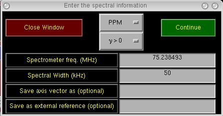
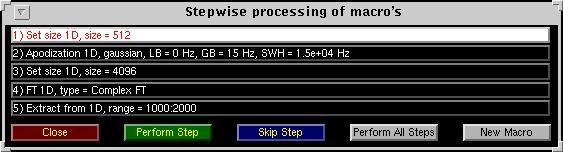
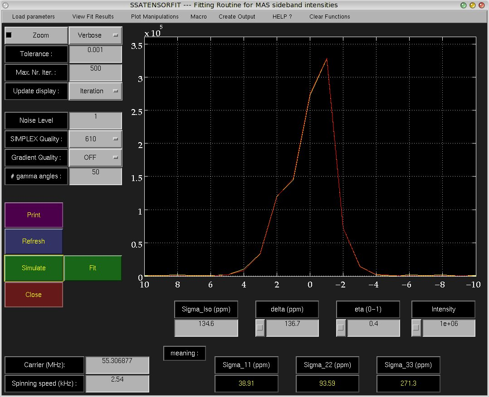
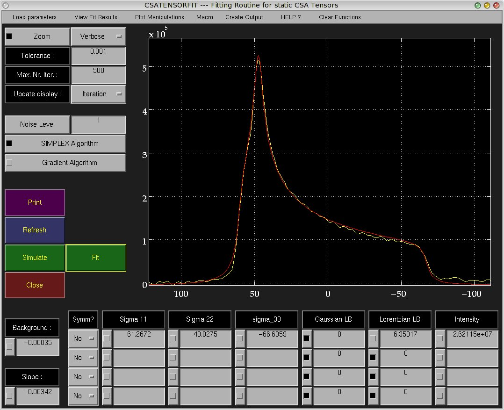
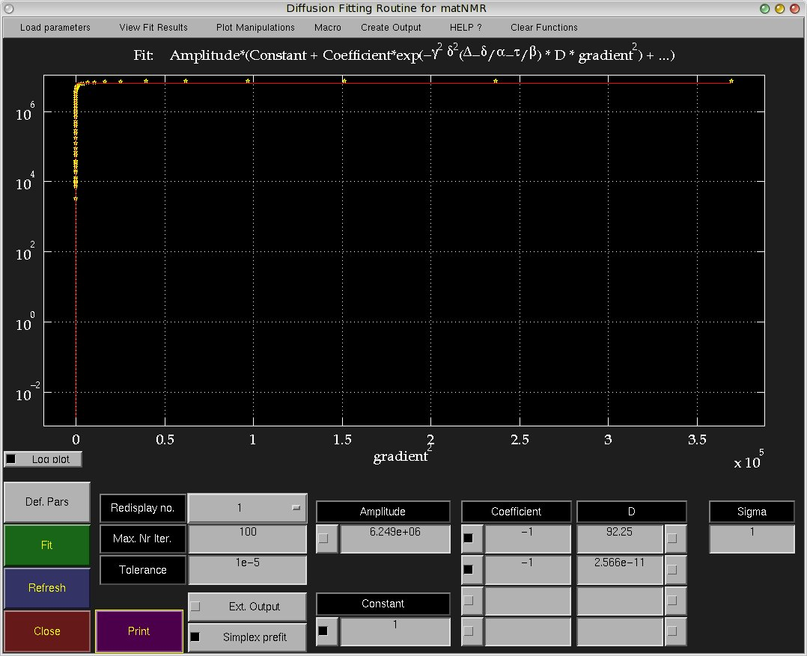
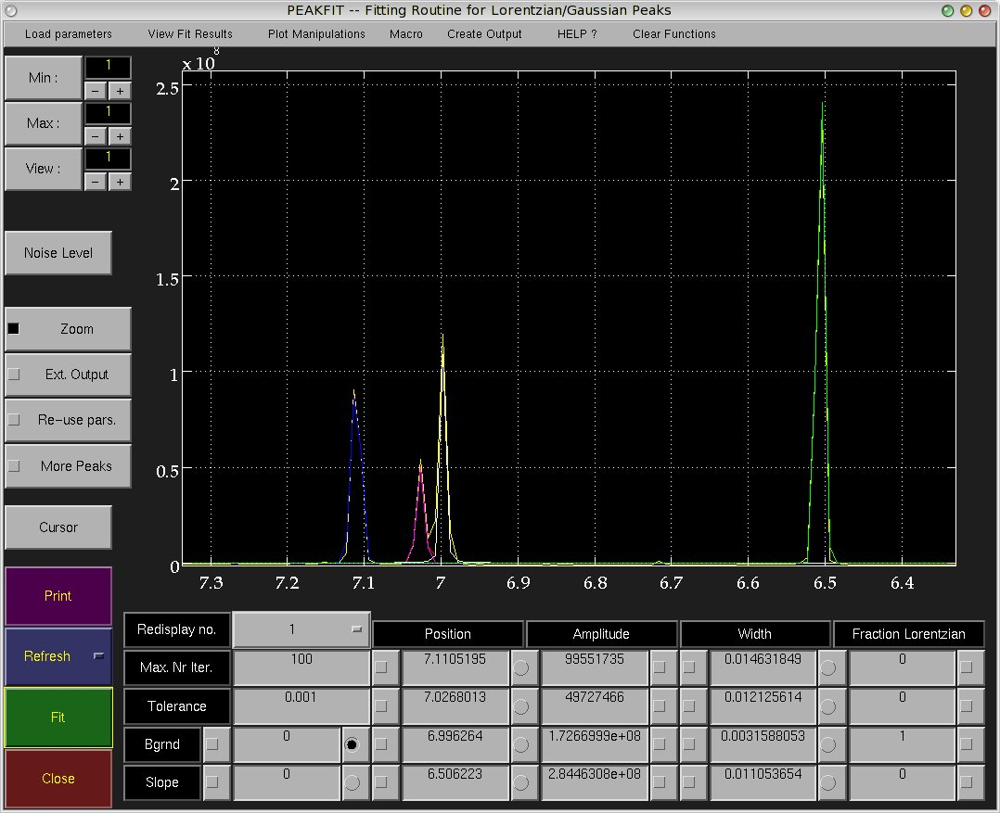
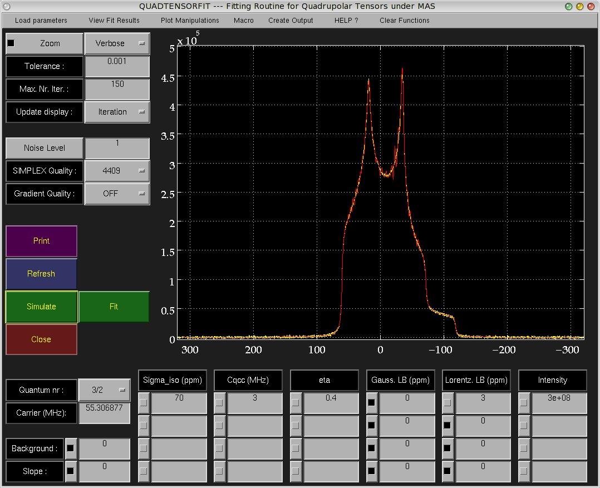
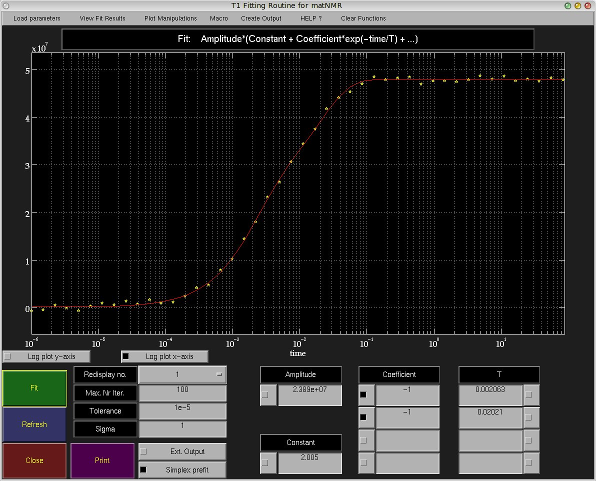

Chapter 5 - The main window
The main window is started using the nmr.m script, i.e. type 'nmr' at the Matlab prompt to start it.
All processing is done from this window and all other functionality implemented in matNMR can be accessed
from the menubar or the Uicontrols.
5.1 General Appearance
The general appearance of the matNMR main window is shown in the figure below:

There are five boxes shaded with a background box around it. Going from top-left to bottom-right they contain
1- a stop-button, a direct-printing button (prints to the default printer as defined in the
$matlabroot/toolbox/local/printopt.m file) and some buttons to open the various menus
2- some often-used buttons for working with 1D spectra. More functions can be found in the menubar.
3- the phasing menu. (see also paragraph 4.9, "Phasing spectra")
4- some buttons for zooming in discrete steps or continously (zoom button). Furthermore there is the
"reset figure" button which resets the current view (leaving nothing but the current 1D spectrum
Qspc2 in the view!) and the "get position" button allows to scan the lines in the plot using the mouse
pointer. Upon pressing the left mouse button a crosshair will appear and some buttons that show the
coordinate and the intensity of the current trace. When more than one lines are in the plot a popup
button will appear to choose which line the routine should follow.
5- some often-used buttons for working with 2D spectra. More functions can be found in the menubar.
Then there are some buttons just above the box with zoom functions.
The "display mode" is for defining whether to show the real, imaginary or absolute value of a FID/
spectrum. Note that this is only a matter of displaying. MatNMR always works with complex values.
The "fourier mode" defines what type of FFT is performed when the FFT-button is pressed (see also
paragraph 4.8, "Fourier transform").
The "apodization" button allows choosing an apodization function. Usually an input window will appear
to ask for more information.
The "spectr. width" edit button allows to directly enter the spectral width belonging to the 1D FID/spectrum
or 2D row/column. In case of a 2D mode the value will be connected to the relevant spectral dimension.
Changing the dimension (say from TD2 to TD1) and back will then give the previously entered value back
again.
The "spectr. freq." edit button allows to directly enter the spectral frequency belonging to the
1D FID/spectrum or the current 2D row/column. In case of a 2D mode the value will be connected to
the relevant spectral dimension. Changing the dimension (say from TD2 to TD1) and back will then
give the previously entered value back
again.
Finally there are five buttons on the right on the plot. The top button calls the
undo function. The second button shows the mode matNMR
is in, either 1D or 2D. The third button specifies whether the FID/
spectrum in the current plot is an FID or a spectrum. This determines the plotting direction (For
non-NMR people: in NMR the convention is to plot a time-scale from left-to-right, a PPM scale from
right-to-left and a Hertz (Hz) scale depending on the gyromagnetic ratio of a nucleus).
The "Transfer Acq." button has a highly specific function: it uploads the variable QacqFID from the workspace
and makes it the current spectrum (1D or 2D). This has been implemented because some people wanted to
use MATLAB for a spectrometer interface.
The "Reload Last" button reloads the last 1D or 2D FID/spectrum. It just evaluates the Qspct variable
that is used by matNMR to denote the name of the last 1D/2D spectrum (for more information on variables
used by matNMR see paragraph 3.3, "Important variables").
5.2 The menubar
As the menubar contains most of the processing functions implemented in matNMR all entries will be
explained here separately. Note that many of the processing functions may also be accessed from the
context menus that are defined. Context menus may be accessed by right-clicking anywhere within the
figure window (even on top of the UI controls!). The context menus are also accessible on top of the axis,
except when the zoom function is switched on. Switching off the zoom will result in the context menus
being accessible again.
5.2.1 Stop matNMR
This function allows to stop matNMR or quit MATLAB. Depending on whether the exit safety flag was
set (see paragraph 2.2.1, "General options") an input
window will appear to ask for confirmation when stopping matNMR. For quiting MATLAB the user is
always asked for confirmation. Note that when stopping matNMR ALL windows belonging to matNMR
are closed, including the 2D/3D Viewer. Stopping other routines will not stop any other routines
though.
5.2.2 Files
This menu deals with the importing of files into MATLAB:
| Name |
Function |
| External MATLAB files | Opens a window which allows selecting the MATLAB file that needs to be
uploaded into the workspace from disk. |
| Series of external MATLAB files | Allows importing a series of similarly-named MATLAB
files from disk into the workspace. The files should have a common name and a specific range
attached to them. For example the series j011101_1, j011101_2, ... , j011101_20 is imported by
supplying 'j011101_$#$' as the name and '1:20' as the range. |
| Last series of external MATLAB files | As the previous function but takes the file name to be the same
as the previously-chosen file and immediately goes to the second input window. |
| Import |
| Binary FID's |
Opens a window which allows selecting the FID file that needs to be
oploaded into the workspace. After selecting the file a second input window will ask for the sizes
of the FID and a name for the new variable (in the workspace).
If selected, the FID will be read into matNMR directly, otherwise the variable will
only be stored in the workspace and a "Load nD" must be executed to load it into matNMR.
The total number of points (real+imaginary!) in the FID file is indicated in this window.
This number does not hold for the VNMR (Varian) format as this routine only divides the binary
file size by 4 (floating point format uses 4 bytes per number). The structure of the VNMR FID
files prevents displaying the correct size.
Currently the formats for XWinNMR, UXNMR, winNMR (Bruker), Spinsight (Chemagnetics), VNMR (Varian)
NTNMR (TecMag), MacNMR (TecMag), Bruker Aspect 2000/3000 and JEOL Generic format are recognized.
Limited support for the SMIS format is also implemented.
Depending on which format is chosen the time domain sizes must be specified. Whenever it
is not necessary to do this the corresponding uicontrols are disabled.
It is also possible to use the standard spectrometer parameter files to specify all the
necessary parameters. This is particularly useful in connection with the default axes, see also
paragraph 3.4 Where is the NMR and
paragraph 5.2.5 Plot manipulations.
Then for all Bruker formats the files "acqu" and "acqu2" are used, for
Chemagnetics the "acq" file, for VNMR the "procpars" and for JEOL Generic format the ".hdr" file.
It is important to note that the following assumptions are made when using the standard
parameter files:
- only the standard files can be used
- if the sizes in the parameter files do not match the size of the FID an error is given
- For 2D spectra the values for the spectral width and spectrometer frequency are not generally reliable
unless the FID has been recorded following the standard pulse programming style for that spectrometer
and using the corresponding standard variables.
Even then the following limitations apply:
- For Bruker SWH and SFO1 are read from acqu2 for the indirect dimension
- For Chemagnetics dw and dw2 to calculate SWH by SWH=1/dw (i.e. States is assumed in the
indirect dimension!). Arrays are read without problems but the SWH is set to 1 in the indirect
dimension. The spectrometer frequency in TD1 is taken to be the same as in TD2.
- For VNMR sw and sfrq are read for TD2 and sw1 for TD1. The spectrometer frequency in TD1 is
set to the same value as for TD2.
- For JEOL x_curr_points, x_freq and x_sweep are used for TD2 and y_curr_points, y_freq and
y_sweep for TD1.
NOTE: IF YOU WANT TO IMPROVE THIS OVERSIMPLIFIED SCHEME PLEASE LET ME KNOW!!
|
| Get last binary FID |
As the previous function but takes the file name to be the same
as the previously-chosen file and immediately goes to the second input window (for faster uploading
of equal sized spectra). If selected, the FID will be read into matNMR directly, otherwise the variable will
only be stored in the workspace and a "Load nD" must be executed to load it into matNMR. |
| Series of binary FIDs |
Allows importing a series of similar binary FIDs into the
workspace. They should have a common name and a specific range attached to them. For example
the series j011101_1, j011101_2, ... , j011101_20 is imported by supplying 'j011101_$#$' as the
name and '1:20' as the range. |
| Last series of binary FIDs |
As the previous function but takes the file name to be the same
as the previously-chosen file and immediately goes to the second input window (for faster uploading
of equal sized spectra). |
| Bruker Spectrum |
opens a window which allows selecting the Bruker spectrum file that
needs to be oploaded into the workspace. After selecting a second input window will ask for size and
name of the new variable. Most of these parameters can be avoided by using the option of reading
standard parameter files, which will look for the original parameter file and extract the necessary
parameters. Alternatively, they may be entered by hand:
The blocking factor is a feature that is used by XWinNMR sometimes
(mainly older versions) to save a spectrum in blocks.
The number that must be specified here is the XDIM parameter that
is written in the procs and proc2s files, in the directory of the dataset. If 0 is entered then
no blocking factor is taken.
The byte ordering determines how XWinNMR has stored the data. Taking the wrong type will
typically result in meaningless noise. This information is in fact stored in the procs
file but it's just as fast to select it yourself, than it is to select a file on disk. If the data
has been processed on SGI then the byte ordering should be big endian, else it is most likely
little endian.
The imaginary and hypercomplex parts may be loaded automatically by selecting the option
in the input window. This assumes that all file names are standard, i.e. that a standard Bruker dataset
is presented.
Finally, if selected, the spectrum will be read into matNMR directly, otherwise the variable will
only be stored in the workspace and a "Load nD" must be executed to load it into matNMR. |
| Get last Bruker Spectrum |
As the previous function but takes the file name to be the same
as the previously-chosen file and immediately goes to the second input window (for faster uploading
of equal sized spectra). If selected, the spectrum will be read into matNMR directly, otherwise the variable will
only be stored in the workspace and a "Load nD" must be executed to load it into matNMR. |
| Series of Bruker spectra |
Allows importing a series of similar Bruker spectra
into the workspace. They should have a common name and a specific range attached to
them. For example the series j011101_1, j011101_2, ... , j011101_20 is imported by supplying
'j011101_$#$' as the name and '1:20' as the range. |
| Last series of Bruker spectra |
As the previous function but takes the file name to be the same
as the previously-chosen file and immediately goes to the second input window (for faster uploading
of equal sized spectra). |
| Chemagnetics Spectrum |
opens a window which allows selecting the Chemagnetics spectrum file that
needs to be oploaded into the workspace. After selecting a second input window will ask for size and
name of the new variable. Most of these parameters can be avoided by using the option of reading
standard parameter files, which will look for the original parameter file and extract the necessary
parameters. If selected, the spectrum will be read into matNMR directly, otherwise the variable will
only be stored in the workspace and a "Load nD" must be executed to load it into matNMR. |
| Get last Chemagnetics Spectrum |
As the previous function but takes the file name to be the same
as the previously-chosen file and immediately goes to the second input window (for faster uploading
of equal sized spectra). If selected, the spectrum will be read into matNMR directly, otherwise the variable will
only be stored in the workspace and a "Load nD" must be executed to load it into matNMR. |
| Series of Chemagnetics spectra |
Allows importing a series of similar Chemagnetics spectra
into the workspace. They should have a common name and a specific range attached to
them. For example the series j011101_1, j011101_2, ... , j011101_20 is imported by supplying
'j011101_$#$' as the name and '1:20' as the range. |
| Last series of Chemagnetics spectra |
As the previous function but takes the file name to be the same
as the previously-chosen file and immediately goes to the second input window (for faster uploading
of equal sized spectra). |
| SIMPSON ASCII |
opens a window which allows selecting the SIMPSON ASCII file that
needs to be oploaded into the workspace. After selecting a second input window will ask for the
name of the new variable. If selected, the spectrum will be read into matNMR directly, otherwise the variable will
only be stored in the workspace and a "Load nD" must be executed to load it into matNMR. |
| Get last SIMPSON ASCII |
As the previous function but takes the file name to be the same
as the previously-chosen file and immediately goes to the second input window (for faster uploading
of similarly named spectra). If selected, the spectrum will be read into matNMR directly, otherwise the variable will
only be stored in the workspace and a "Load nD" must be executed to load it into matNMR. |
| Series of SIMPSON ASCII |
Allows importing a series of similarly-named SIMPSON
ASCII files into the workspace. They should have a common name and a specific range attached to
them. For example the series j011101_1, j011101_2, ... , j011101_20 is imported by supplying
'j011101_$#$' as the name and '1:20' as the range. |
| Last series of SIMPSON ASCII | As the previous function but takes the file name to be the same
as the previously-chosen file and immediately goes to the second input window (for faster uploading
of equal sized spectra). |
|
| Export |
| Save as SIMPSON ASCII |
opens a window which allows selecting a file thatis used
to store the current 1D or 2D on disk in SIMPSON ASCII format. |
|
| Series Trickery |
These functions allow all sorts of actions to be done on a series of variables in the workspace, which
have common names and a specific range attached to them. For example the series j011101_1,
j011101_2, ... , j011101_20 can be addressed by supplying 'j011101_$#$' as the
name and '1:20' as the range. The following functions have been defined currently.
| Add series of variables |
Allows adding a series of variables. |
| Concatenate series of variables |
Allows concatenating a series of variables in the workspace, which
have a common name and a specific range attached to them. |
| Normalize series of variables |
Allows normalizing a series of variables in the workspace, which
have a common name and a specific range attached to them, to either the same maximum or the same integral. |
|
| Change directory |
Sets the current directory path |
| Set search profile |
Sets the search profile for binary FID's / Bruker spectra / SIMPSON
ASCII files |
| Edit MATLAB path |
Starts the MATLAB search path editor |
| Edit Workspace |
Starts the MATLAB workspace editor |
| Editor/Debugger |
Starts the MATLAB m-file editor/debugger |
5.2.3 1D Processing
This menu deals with everything concerning working with 1D spectra:
| Name |
Function |
| Load 1D |
Gets a new 1D spectrum. An axis vector may be specified and also whether
the variable is an FID or a spectrum (see also button information in paragraph 5.1,
"General appearance"). |
| Add Spectrum to Workspace |
Saves the current 1D spectrum to the workspace. Depending on
whether the history and/or axis vector must be included a matNMR structure will be created (also
see paragraph 3.5, "matNMR format for spectra"). |
| Save Spectrum to Disk |
As the previous function but saves the variable to disk. In case
more than one variable names are given in the input window it will save the variables without doing
anything with the current 1D spectrum! |
| Dual display |
Adds an additional line to the view. If no axis vector is specified
then the current axis vector Qtempvec1d will be used. Note that the new spectrum must have the same
size then. If a spectrum of different size is given then an axis vector MUST be specified. Spectra
that are added to the view using "dual plot" do not influence any processing steps. Every time
the plot is refreshed by matNMR (or by applying the "reset figure" button, see paragraph 5.1,
"General appearance") they will be removed.
Various plot types are supported by the dual plot routine: normal plots, horizontal stack plots,
vertical stack plots, 1D bar plots and errorbar plots. This will affect the input window that will
pop up when selecting this function. |
| Convert Bruker qseq |
The Bruker qseq acquisition mode is basically TPPI in 1D. This in
principle should be a real vector but when loading a binary the FID is in fact complex.
This function converts the FID into a real vector with all real and imaginary points concatenated and
every second complex point inverted:
R I R I R I R I R I R I R I...
This function does not need to be used as the qseq mode for FT allows direct processing but is
recommended. Direct processing in principal does not allow further manipulation (e.g. apodization
is ever so slightly wrong when applying it to the complex vector). |
| Standard Processing |
| Remove Bruker digital filter |
Removes the effects of the Bruker digital filter. This
filter performs a time-shift on the FID of n points which can be corrected by giving a 360*n degree first order
phase correction to the spectrum. This routine does an FFT, 360*n degree first order phase correction
and then an IFFT to obtain the FID back. Now apodization can be done as usual. |
| Shift data points |
Shifts the FID (or spectrum) by a certain number of points. The FID
is kept at the same length by adding the same number of zeros to the end. A positive number will shift
the FID left (n+1 -> n), a negative number right (n -> n+1). |
| Swap whole echo |
Performs a data shift such that the maximum of a FID with an echo
in it, will appear at the first point afterwards. All points before the maximum are added to the end
of the FID. After this the FID can be apodized (see also paragraph 4.7,
"Apodizing FID's"). |
| DC offset correction |
Performs an offset correction. A signal-free part of the FID
is asked for after which the real and imaginary parts of the FID are corrected independently by
substracting the mean of the specified region. |
| Solvent Suppression |
Performs a solvent deconvolution as was proposed by Marion,
Ikura and Bax, JMR, 84, 425-430 (1989). Either a Gaussian, Sine-Bell or Rectangular window'
function may be used with a width a (2*K + 1). The jump size M denotes which point to use for
the extrapolation of the first and last K points. |
| Set size |
Changes the size of the current spectrum. A size smaller than the current
size will lead to cutting away the end of the spectrum, a bigger size will leed to zeros being added
to the end of the spectrum. |
| FT |
Performs a Fourier transform on the current FID. The type of Fourier transform
is defined by the corresponding button in the main window (see paragraph 5.1,
"General appearance"). For more information on the differences
between the various modes see paragraph 4.8,
"Fourier transform". |
| FFTshift |
Performs a FFTshift on the current spectrum, i.e. a shift of the zero-point
of the spectrum to the center (see MATLAB documentation for more information on fftshift). |
| Flip L/R |
Flips the current spectrum from left to right. Necessary in case the
spectrum is flipped (different receiver rotation). |
| Baseline correction |
Does a 1D baseline correction on the current spectrum (see
also paragraph 4.10, "Baseline correction"). |
|
| Additional Features |
| Concatenate Matrix |
Allows concatenation of the current 1D spectrum into a longer 1D
or a 2D with all slices the same. |
| Extract from 1D |
Extracts part of the current 1D spectrum and makes it the new 1D
spectrum. The range that must be specified must be given in the unit of the axis vector. The new
axis vector remains in the units of the original vector. |
| Integrate |
Shows the integral of an area in the current 1D spectrum. Specify a region
by clicking left and right of this region. Very basic. |
| Inverse FT |
Performs the inverse Fourier transform to the current dimension of the 2D. The exact
workings depend on the Fourier mode selected, and some of the possible Fourier modes do not allow inverse FT.
A notice is given when this is the case. |
| Linear prediction |
Performs a forward or backward linear prediction. Two methods for
linear prediction (back- and forward) are implemented in matNMR: LPSVD and ITMPM. They
are described in the following paper: Y.-Y. Lin, P. Hodgkinson, M. Ernst and A. Pines, JMR, 128,
30-41 (1997). Please refer to this paper for the explanation of the methods.
To properly predict points: Cut the FID such that all points that remain are good (so take away the
initial bad points or the noise at the end of the FID). Select the method that you want to use
and specify the number of points that need to be predicted, the number of frequencies that are assumed
in the signal and the S/N-ratio. The ITMPM-method allows the algorithm to determine the number of
signals. For that choose either -1 or -2 (different methods). |
| Noise filling |
This option changes the size of the FID bit instead of appending zeroes, Gaussian noise is appended. |
| Regrid Spectrum |
Interpolates the current spectrum to a new axis. Different interpolation algorithms may be used to
optimize for speed or quality. |
| S/N |
Very basic routine for determining the signal to noise ratio of a spectrum. Asks
for a peak-free region of the spectrum to calculate S/N as the maximum divided by the standard
deviation of the noise. |
|
| Fitting |
| CSA tensors MAS |
Fits a tensor to the MAS sideband intensities. For a
complete discription of this routine see paragraph 5.5, "Fitting of CSA tensors from the MAS sideband manifold". |
| CSA tensors Static |
Fits tensors to a static powder pattern. For a
complete discription of this routine see paragraph 5.5, "Fitting of static CSA tensors". |
| Diffusion Curves |
(Multi-)exponential fit of diffusion curves. For a
complete discription of this routine see paragraph 5.5, "Fitting of Diffusion Curves". |
Peak Deconvolution |
Fits mixed Gaussian/Lorentzian oeaks to the current spectrum. To reduce the number
of data points that the peak-fitting routine has to take into account, first zoom into the region of interest.
For a complete discription of this routine see paragraph 5.6,
"Spectral Deconvolution"). |
| Quadrupolar Tensors |
Fits a quadrupolar tensor to a MAS spectrum. For a
complete discription of this routine see paragraph 5.8, "Fitting of Quadrupolar Tensors under MAS"
). |
| Relaxation Curves |
(Multi-)exponential fit of relaxation curves. For a
complete discription of this routine see paragraph 5.8, "Fitting of Relaxation Curves"
). |
|
5.2.4 2D Processing
This menu deals with everything concerning working with 2D spectra:
| Name | Function |
|---|
| Load 2D | Gets a new 2D spectrum. Axis vectors may be specified and also whether
the variable is an FID or a spectrum (see also button information in paragraph 5.1,
"General appearance"). |
| Load 3D | Gets a new 3D spectrum (For more information on 3D support see
paragraph 4.2, "1D, 2D and 3D mode".
Axis vectors may be specified and also whether the variable is an FID or a spectrum
(see also button information in paragraph 5.1, "General
appearance"). |
| Transpose | Transpose the current 2D spectrum. May be needed to convert spectra
that were saved with different conventions than used by matNMR. |
| Add Spectrum to Workspace | Saves the current 2D spectrum to the workspace. Depending on
whether the history and/or axis vector must be included a matNMR structure will be created (also
see paragraph 3.5, "matNMR format for spectra"). |
| Save Spectrum to Disk | As the previous function but saves the variable to disk. In case
more than one variable names are given in the input window it will save the variables without doing
anything with the current 2D spectrum! |
| Convert Bruker qseq | The Bruker qseq acquisition mode is basically TPPI in 1D. This in
principle gives a real vector but when loading a binary it the spectrum is assumed to be complex.
This function converts the FID into a real vector with all real and imaginary points concatenated and
every second complex point inverted:
R I R I R I R I R I R I R I...
This function does not need to be used as the qseq mode for FT allows direct processing but is
recommended. Direct processing in principal does not allow further manipulation (e.g. apodization
is ever so slightly wrong when applying it to the complex vector). |
| Convert Bruker/Varian States | Converts the standard Bruker/Varian way of saving States
spectra into the matNMR format (Chemagnetics format). For more information on the format see paragraph 4.8,
"Fourier transform". |
| Echo / Anti-Echo to States | Converts an echo and an anti-echo experiment into a States-type
experiment. The matrix must be in the same format as a States experiment. For more information on the
format see paragraph 4.8, "Fourier transform". |
| Start States processing | Splits the States FID into its proper hypercomplex parts
and sets all necessary flags for States processing (see also paragraph 4.8,
"Fourier transform"). |
|
Full matrix manipulations |
| Remove Bruker digital filter | Removes the effects of the Bruker digital filter from
all rows/columns of the current 2D FID (depending on the current dimension). This filter performs a
time-shift on the FID of n points which can be corrected by giving a 360*n degree first order phase
correction to the spectrum. This routine does an FFT, 360*n degree first order phase correction and
then an IFFT to obtain the FID back. Now apodization can be done as usual. |
| Shift data points | Shifts all rows/columns of the current 2D FID (depending on the
current dimension) by a certain number of points. Each row/column is kept at the same length by adding
the same number of zeros to the end. A positive number will shift the FID left (n+1 -> n), a negative
number right (n -> n+1). |
| Swap whole echo | Performs a data shift on all rows/columns of the current 2D FID
(depending on the current dimension) such that the maximum of a FID with an echo in it, will appear at
the first point afterwards. All points before the maximum are added to the end of the FID. After this
the FID can be apodized (see also paragraph 4.7,
"Apodizing FID's"). |
| DC offset correction | Performs an offset correction on all rows/columns of the current
2D FID (depending on the current dimension). A signal-free part of the FID is asked for after which
the real and imaginary parts of each row/column are corrected independently by substracting the mean
of the specified region in each row/column. |
| Solvent Suppression | Performs a solvent deconvolution as was proposed by Marion,
Ikura and Bax, JMR, 84, 425-430 (1989). Either a Gaussian, Sine-Bell or Rectangular window'
function may be used with a width a (2*K + 1). The jump size M denotes which point to use for
the extrapolation of the first and last K points. |
| Apodize | Performs the currently selected apodization mode on all rows/columns of the
current 2D FID (depending on the current dimension). See paragraph 4.7,
"Apodizing FID's" for more information on apodizing. |
| Set size | Changes the size of the current 2D spectrum. A size smaller in any dimension
than the current size will lead to cutting away the end of the dimension, a bigger size will leed to
zeros being added to the end of the dimension. |
| Zero part of 2D | Sets entire rows and columns of the current 2D matrix to 0. NOTE: input
of the ranges is in points! For example: '1:20'. Leaving an input line empty means not zeroing
any rows or columns. |
| FT | Performs a Fourier transform on all rows/columns of the current 2D FID (depending
on the current dimension). The type of Fourier transform is defined by the corresponding button in
the main window (see paragraph 5.1, "General appearance"). For more
information on the differences between the various modes see paragraph 4.8,
"Fourier transform". |
| FFTshift | Performs a FFTshift on all rows/columns of the current 2D FID (depending
on the current dimension), i.e. a shift of the zero-point of the row/columns to the center (see
MATLAB documentation for more information on fftshift). |
| Flip L/R | Flips all rows/columns of the current 2D spectrum (depending on the current
dimension) from left to right. Necessary in case the spectrum is flipped (different receiver rotation). |
| Set Phase | Performs the currently selected phase correction on all rows/columns of the
current 2D FID (depending on the current dimension). See paragraph 4.9,
"Phasing spectra" for more information on phase correction. |
| Baseline correction | Does a 2D baseline correction on the current spectrum (see
also paragraph 4.10, "Baseline correction"
). |
|
| Single Slice Manipulations | This submenu allows the manipulations of the current
row/column of the current 2D, without the rest of the matrix being affected. Look at the entries
for the regular functions to see what they do. |
|
Additional Features |
| Concatenate Matrix | Allows concatenation of the current 2D spectrum into a bigger
2D spectrum. Concatenation can be done in both directions. |
| Extract from 2D | Extracts part of the current 2D spectrum and makes it the new 2D
spectrum. The range that must be specified must be given in the unit of the axis vector. The new
axis vectors remain in the units of the original vectors. |
| Integrate Fixed range | Calculates the integral of a part of a spectrum by selecting a region of the
current 2D spectrum (in units of the axis vectors) and adding all intensities. The output is a variable in the
workspace with the intensities, the axis in the current dimension and the position of the maximum signal in units
of its original axis. |
| Integrate around Max | Shows the integral of an area in the current 1D spectrum.
This routine searches in each slice in the 2D for the maximum signal
in a user-specified range and integrates with a user-specified range around that maximum. This allows integration
of peaks with variable positions and possibly overlapping other peaks. The output is a variable in the workspace
with the intensities, the axis in the current dimension and the position of the maximum signal in units of its
original axis. |
| Inverse FTPerforms the inverse Fourier transform to the current dimension of the 2D. The exact
workings depend on the Fourier mode selected, and some of the possible Fourier modes do not allow inverse FT.
A notice is given when this is the case. |
| Linear prediction | Performs a forward or backward linear prediction on all rows/columns
of the current 2D spectrum (depending on the current dimension). Two methods for
linear prediction (back- and forward) are implemented in matNMR: LPSVD and ITMPM. They
are described in the following paper: Y.-Y. Lin, P. Hodgkinson, M. Ernst and A. Pines, JMR, 128,
30-41 (1997). Please refer to this paper for the explanation of the methods.
To properly predict points: Cut the FID such that all points that remain are good (so take away the
initial bad points or the noise at the end of the FID). Select the method that you want to use
and specify the number of points that need to be predicted, the number of frequencies that are assumed
in the signal and the S/N-ratio. The ITMPM-method allows the algorithm to determine the number of
signals. For that choose either -1 or -2 (different methods). |
| Noise filling |
This option changes the size of the FID bit instead of appending zeroes, Gaussian noise is appended. |
| Regrid Spectrum |
Interpolates the current spectrum to a new axis. Different interpolation algorithms may be used to
optimize for speed or quality. |
| Set integral | Sets the integral of the spectrum by selecting a region of the
current 2D spectrum (in units of the axis vectors) and assigning a value to this. |
| Shearing transformation | Performs a shearing transformation on the current 2D spectrum
(i.e. frequency domain shearing) or FID (i.e. time domain shearing). In either case the shearing
factor (as determined by the NMR experiment) and the spectral widths in both TD1 and TD2 must be
specified in the input window. For the frequency domain version also the direction of shearing can
be specified (vertical or horizontal). In general a vertical shearing is needed for NMR spectra
but the horizontal shearing may have a general use. The frequency domain shearing uses a spline
interpolation scheme, i.e. this is not as accurate as the time domain shearing, which is just
a TD1-dependent first order phase correction to the matrix after FT in TD2 is done.
NOTE:When shearing in frequency domain the imaginary parts are set to zero, i.e. no phase
correction will be possible afterwards!
|
| Symmetrize | Symmetrizes the current 2D spectrum along the diagonal either by
averaging the intensities on both sides of the diagonal or by taking the highest value of the two
sides. Note that the spectrum must be square to be able to do this. |
|
|
Fitting |
| Peak deconvolution | Performs a (absorptive) peak fit on peaks in the current dimension of the
2D spectrum. To reduce the number of data points that the peak-fitting routine has to take into
account, first zoom into the region of interest. The difference with the "Peak fitting" entry
in the "1D Processing" menu is that now the full 2D matrix is supplied to the peak fitting
routine which allows fitting series of 1D spectra consecutively. For a complete discription of this
routine see paragraph 5.6, "Peak fitting"). |
|
|
Various Views |
| Diagonal: | Extracts the diagonal of the spectrum. The axis vector belonging to the resulting
spectrum is in points. |
| Anti-diagonal: | Extracts the anti-diagonal of the spectrum. The axis vector belonging to the
resulting spectrum is in points. |
| Sum TD1: | Extracts the sum over all columns of the spectrum. The range of columns to take into
account for this function can be specified in the unit of the axis. The axis vector belonging to the resulting
spectrum is the same as the original axis. |
| Sum TD2: | Extracts the sum over all rows of the spectrum. The range of rows to take into
account for this function can be specified in the unit of the axis. The axis vector belonging to the resulting
spectrum is the same as the original axis. |
| Skyline: | Extracts a skyline projection of the 2D spectrum at a specified angle. For a direct
view of Td2 set the angle to 0, for a direct view of TD1 set it to 90. Currently only the angles
of 45 and 135 degrees are allowed besides 0 and 90. The axis vector belonging to the resulting
spectrum is equal to the original vector for angles of 0 and 90, else in points. |
| Horizontal Stack plot: | Creates a horizontal stack plot from all rows/columns of the current 2D matrix
(depending on the current dimension). The zoom limits of the current view are taken into account
when creating the 1D stack plot.
NOTE: this is a special plot type and will not persist when pushing the
"reset figure" button. |
| Vertical Stack plot: | Creates a vertical stack plot from all rows/columns of the current 2D matrix
(depending on the current dimension). The zoom limits of the current view are taken into account
when creating the stack plot. Also, the vertical displacement factor may be changed to create the
optimum plot.
NOTE: this is a special plot type and will not persist when pushing the
"reset figure" button. |
|
| 2D/3D Viewer | Shortcut to the 2D/3D Viewer window. The current name of the input
variable for this routine is set to QFT1, i.e. the current 2D matrix in the main window. |
5.2.5 Plot manipulations
This menu contains all kinds of functions to change the appearance of the current plot.
| Name |
Function |
| Legend |
This routine provides a means of adding legends to a plot. A window will
appear looking like:

from which the
labels, the text properties and all individual line properties can be specified. The routine checks
the number of lines currently in the plot automatically and provides sufficient input boxes.
Line properties can be changed separately or in groups: select the desired lines by clicking on
the check buttons in front of each line.
If there already is a legend present in the plot it is best to remove it first before adding a
new one as it may be that the routine does not find the previous legend properly.The resulting
legend will be plotted on top of the existing plot in the main window. It can be moved however
by keeping the left mouse button pressed over the legend and then moving the mouse. |
|
Ruler x-axis |
This submenu provides a means of changing the axis to a plot. For
more information see also paragraph 3.4,
"Where is the NMR"
| Use Default Axis |
Switches between the default axis and a fixed axis. A check flag
shows when the default axis is on. The unit of the axis is
defined by the current settings and whether the current spectrum is an FID or a spectrum. |
| Reset Default Axis |
Resets the values for spectral reference, which makes the center
of the spectrum 0 ppm/Hz or kHz. |
| Change Default |
Changes the current settings of the units for the default axis
for either FID or spectrum mode. |
| External Reference |
| Name |
Features to manipulate the spectral referencing through external data. |
| Apply External Reference |
Allows the application of a spectral reference, as stored
in the workspace either as a spectrum or as a reference variable, to the current spectrum. For
2D spectra the reference values may be entered differently for both dimensions by entering two
values for each parameter. If only one value is specified then both dimensions are taken to be the
same.
|
| Define External Reference |
Allows manual definition of a spectral reference.
For 2D spectra the reference values may be entered differently for both dimensions by entering two
values for each parameter. If only one value is specified then both dimensions are taken to be the
same. |
| Import External Reference |
Allows importing of a spectral reference from an
external dataset. This requires the default axis mode is on AND that all spectral parameters for
the current dataset have been set correctly. Especially the sign of gamma (magnetogyric ratio)
is important as this will determine the sign of a frequency axis. NOTE that both XWinNMR and
Spinsight do not handle this correctly and that the sign may therefore be different.
Currently this only works for the XWinNMR, VNMR and Spinsight formats but should be implemented for
other formats as well at some point (kick me to speed up this process!) |
|
| Other |
The rest of the menu allows direct
access to axes in time, gradient, points or a user-defined vector, but also to the menu-based
option "ruler X-axis". A window will
appear looking like:

from which
the type of axis vector (PPM, kHz, Hz, time, gradient, points, user-defined) can be chosen. The spectral width
must be specified for PPM and Hz axes and for a PPM axis also the carrier frequency. For an
axis in Hz also the sign of the gyromagnetic ratio of the nucleus that corresponds to the current
spectrum must be specified.
NOTE: Gradient axes are defined in T/m and NOT in G/cm. This means you may have to divide
the gradient values from your software by 100 to obtain the proper values!!
Pressing the "Continue" button proceeds the routine and one is asked for a reference value. After
that the reference peak can be specified by using the crosshair mouse pounter and clicking on the
desired reference peak (This may seem strange but is necessary because of a MATLAB bug. Specifying the
reference peak before asking its value leads to a mess with the main and input window). If a name is
given for the new axis vector then it will be saved in the workspace after calculating it. |
|
| Title/axis labels |
This routine provides a means of changing the title and axes labels
of a plot. A window will appear looking like:

Pressing the "Apply" button will update all labels immediately. The "Refresh" is used for updating
the text labels currently written in this window to the labels in the current plot (useful when
having this window opened continously). The "full width" button expands the window to the full
width of the screen to give wider edit buttons. This is useful for long texts as they can become
inaccessible because the scrolling doesn't work perfectly. |
| Plotting Functions | This submenu currently contains
| Name |
Function |
| 1D Bar Plot |
a function to create a 1D bar plot from the current view. The current
axis is taken and the user may select the various properties of the bars from the input window.
NOTE: this is a special plot type and will not persist when pushing the "reset figure" button. |
| Errorbar Plot |
a function to create a errorbar plot from the current view. The current
axis is taken and the user must provide a vector with standard deviations (or similar).
NOTE: this is a special plot type and will not persist when pushing the "reset figure" button. |
| Show Sidebands |
a simple function to indicate MAS sidebands in the spectrum. This
requires specifying the central line and the MAS frequency, and various parameters that change the
appearance of the markers. The markers can be removed by pressing the "reset figure" button. |
|
| Various axis properties |
The rest of this menu consists of various axis properties.
More explanation concerning these can be found in the MATLAB documentation. Note the difference
between changing plot properties using this menu and by changing the properties using the
options menu (see also paragraph 2.2, "Setting up matNMR"):
changes made with these functions only affect the current plot and not the general matNMR
settings. |
5.2.6 History/Macro
This menu deals with the processing history and working with macro's (see also
paragraphs 4.3, "Using the processing history" and 4.4,
"Using macro's") :
| Name |
Function |
| Show History | This routine shows the processing history for the current spectrum
(either 1D or 2D). A window will appear looking like:

The "Print" button allows to print the history to a printer or to disk. A separate window will be
opened in which the history is plotted as graphical text (Unfortunatelt this is necessary because it is
much more difficult to print text in UI-controls than graphical text in MATLAB).
|
| Connect history to FID | This routine connects the current processing history macro to
a FID variable in the workspace. If the variable is not a matNMR structure yet (see also paragraph 3.5,
"matNMR format for spectra") it will make a structure out of it.
If the variable already is a matNMR structure then only the HistoryMacro field will be changed.
|
| Save history as macro | This routine saves the current processing history macro
as a variable in the workspace. It may then at any time bu run as a macro.
|
| Convert history macro to script | This routine converts the current processing history macro
to an independent processing script on disk. The script can then be applied to any dataset. The script contains
many comments as to what the syntax of the matNMR processing scripts is. This option serves as an alternative to
storing the processing history with the FID. (See also Chapter 8, Script-based processing with matNMR)
|
| Reprocess from history | This routine reprocesses the processing history macro
that is connected to the current FID. Note that this only works when done directly after
loading a FID into matNMR because else the history macro will be overwritten by the new processing
steps. (see also paragraph 4.4, "Using macro's") |
| Reprocess from history stepwise |
Same as above but now the reprocessing can be done
stepwise. A window is opened in which the information of the current and the four next steps is
displayed.

Steps can be performed and skipped. Furthermore the "perform all steps" button performs all next
steps without confirmation. The "New Macro" button loads a new macro and displays its
processing steps. (see also paragraph 4.4, "Using macro's") |
| Clear History | Clears the current processing history, i.e. the QmatNMR.History variable. |
| Start recording macro | Starts the recording of a new macro. An input will appear to ask
whether only processing, only plotting or all actions must be stored in the macro. Recording continues
until the stop command is given (see below). Note that for user-commands, i.e. commands that are usually
executed from the MATLAB command line, to be put into the macro the "execute user-command" function
(see below) must be used! (see also paragraph 4.4, "Using macro's") |
| Stop recording macro |
Stop the recording of a macro. An input window
will appear to ask for a name of a variable in the workspace to store the new macro in.
(see also paragraph 4.4, "Using macro's") |
| Execute user-command | This function is used to enter user-commands to a
macro (and thus also to the processing history macro!). An input window will appear to ask for the
command. The resulting string is evaluted using the MATLAB eval command (see the MATLAB documentation
for more information about eval) and stored in the history macro in a numeric format.
(see also paragraph 4.4, "Using macro's") |
| Execute macro | This routine executes a macro.
(see also paragraph 4.4, "Using macro's") |
| Execute macro stepwise | This routine executes a macro stepwise. The same
window as used for "Reprocess from history stepwise" (see above) will appear . |
5.2.7 Create Output
| Name |
Function |
| Printing Menu |
The printing menu is a general feature available from all matNMR windows that is used for printing.
Using a separate window the MATLAB print command (see the MATLAB documentation for more information
on print) can be executed. More information on the printing menu is given in paragraph 7.1,
"Printing menu".
|
| Save figure to disk |
This function will store the current window as a binary figure on disk as an executable m-file. This will
allow the user to recall the exact figure by retyping the name of the m-file on the command line. This uses
the Matlab mfig data format. See the Matlab manual for more information on the "saveas" command
|
| Copy figure |
This function will copy the current view of the main window into a separate window, but without
the UI-controls. This will give something like:

The menubar of this new window contains the standard MATLAB menubar which has some useful
features for printing and saving the figure. It also offers the possibility to change axis properties
and stuff (More information on this menubar can be found in the MATLAB documentation). Additional
features in the menubar are the MATLAB zoom and rotate3D functions, the matNMR "Get Position" (for more
information see paragraph 5.1, "General appearance") and the
printing menu (for more information see paragraph 7.1,
"Printing menu").
|
5.2.8 Options
This menu allows changing all default settings of matNMR as is described in detail in
paragraph 2.2, "Setting up matNMR (options)".
5.2.9 Help
Besides the simple "About matNMR" and "Copyright" notices this contains a direct link to
this manual from inside MATLAB. The browser, defined in the $matlabroot/toolbox/local/docopt.m
file, will be opened and the matNMR manual will appear (See the MATLAB documentation for more
information on the MATLAB web and docopt commands). As the manual is included in the matNMR
distribution reading the manual should be faster than using the matNMR website.
5.2.10 Goodies
| Name |
Function |
| Undo | This function undoes the last processing step which may be 1D or 2D mode. There is also an
undo button in the main window which does exactly the same. By pressing CTRL-Z in the window
the function may also be called.
The total number of processing steps that may be undone can be set in the
general options menu.
Beware though of the extra memory usage especially for the 2D mode!
A full copy of the hypercomplex matrices is stored for each step which for a 1024x1024 spectrum
already means 32Mb per undo step! |
| Clear Functions |
this performs the MATLAB clear functions command. All compiled functions are deleted from
memory forcing MATLAB to recompile each function again upon running it. This is useful when working
with your own m-files (or changing the matNMR code) to force MATLAB to use the altered function (See
the MATLAB documentation for more information on the MATLAB clear command). Furthermore the mouse
pointer is set to an arrow head. |
| Reset after Error |
this performs almost the same as the clear functions command, but also recreates the axis. This is
sometimes useful when the view is distorted after an error has appeared (typically a MATLAB error). |
| Select matNMR Distribution |
Allows switching of matNMR distribution. This is only useful if you have multiple versions of matNMR stored
on disk and you wish to use another version than the one you are currently using. The path variable is
changed in order to make sure the new distribution is used exclusively and matNMR is restarted. No safety
is built in so information may be lost. Aftert restarting Matlab, the path variable will be the same as
usual |
5.3 Fitting of CSA tensors from the MAS sideband manifold
5.3.1 General appearance
MatNMR offers a fitting routine for magic-angle spinning sideband intensities from
the "1D Processing" entry in the menubar. The following figure window will appear:

The routine can be operated using the UI-controls in the figure window. The functions of these
will be explained in paragraph 5.3.2 just below.
The auxilary functions in the menubar are described in
paragraph 5.3.3 below.
Upon starting the routine the current 1D spectrum (main window) is taken and plotted. It is assumed
that the current spectrum is a set of sideband integrals and that the axis ruler has been changed to
indicate the sideband number deviation from the centerband (=0).
Sideband number -3 means that the frequency of the peak is at omega_0 - 3*omega_r. This is independent
of the sign of the gyromagnetic ratio!
To best way to obtain the sideband amplitudes is to use the deconvolution routine,
paragraph 5.6 to fit the lineshapes of the individual sidebands, and take the values for the
integrals and use them for the fit of the sideband amplitudes. This is more accurate than taking only the intensity
of the line at a multiple of the spinning speed, since spinning speed instabilities will hardly affect
the centerband but the increasingly affect the line for higher sideband numbers. The integral of the line
should not be affected. After fitting the 1D spectrum, the results are stored in a structure and one of the
fields is called "Integrals". These contain the values for the peaks. Add the correct axis for the sideband
numbers, taking care that the sign of the gyromagnetic ratio is correct. Otherwise the sign of the anisotropy
delta will invert.
To fit the sideband manifold, the Larmor frequency must be entered in MHz and the magic-angle spinning
frequency in kHz. The isotropic shift in ppm may also be entered if tensor values sigma_11, sigma_22 and
sigma_33 are required. The routine itself only fits the anisotropy "delta" and the asymmetry "eta", and
an intensity. The sideband manifold is calculated using a gammaCOMPUTE-based algorithm which uses an
analytical expression for the frequency of a crystallite. Through powder averaging the complete sideband
manifold can be calculated.
As holds for all non-linear fits a good initial estimate of the parameters is required for an efficient
fit convergence. To facilitate finding such an estimate the "Simulate" button may be used.
After having defined the initial guesses the fit can be started with the "Fit" button. Should a
parameter not be fitted but kept constant at its current value, then this can be done by selecting the
check button (with the square block in it) belonging to the parameter.
Two algorithms may be used for fitting: SIMPLEX and a gradient algorithm. Typically the SIMPLEX
algorithm is used for coarse optimization and is followed by a gradient minimization to finish off the
analysis. The quality of the simulation of the sideband manifold can be determined for both algorithms
separately. The simulation uses a gammaCOMPUTE-based calculation with a two-angle ZCW scheme for angles
alpha and beta, and a separate number of angles gamma, which can be selected in the appropriate UIcontrol.
By choosing a higher number of powder-averaging angles the quality of the simulation will
improve. By default 610 powder-averaging angles are selected for SIMPLEX and none for the gradient algorithm.
The value of 610 angles, combined with 50 values for angle gamma seems to provide a stable and fast
result for a wide number of conditions (say up to 10 sidebands at least). When more sidebands are required
it is important to test the stability of the fit by increasing the number of averaging points.
When the fit has finished by default the results are written into the variable QSSAFitResults which
can be read out by hand by the user (Note that this variable will be deleted when matNMR is stopped!
This means it must be renamed, if it has to be kept in the workspace for later use, before stopping
matNMR). Alternatively, from the "View Fit Results" entry in the menubar a new name for putting the
results in can be defined. To be able to access this variable the user must make the variable global
by typing "global VariableName" at the MATLAB prompt. A message is written to make sure the user
doesn't forget this.
The format of the parameters is as follows:
- delta
- eta
- intensity
- Error
- Carrier
- Spinning Speed
- isotropic shift
All these numbers are put in a single row. This variable is combined with the original data, the
axis to the data, the fitted spectrum and the error value into a structure variable. The fields in
this variable are "Parameters", "Fit", "Data", "Axis" and "Error".
5.3.2 Buttons
| Name |
Function |
| Zoom | Switches the zoom function on or off. |
| Verbose | Determines the level of output generated by the fitting algorithms. This can
either be never, after every iteration or only after finishing the fit. |
| Tolerance | Termination tolerance for the fit. |
| Max. Nr. Iter. | Maximum number of iterations for each fit. |
| Update display | Defines whether the plot should be updated after each iteration or
only after the fit has finished. |
| Noise level | In order for the calculated error to be a chi^2 the standard deviation
of the noise must be entered here. This can be taken from the 1D spectrum. A proper value for the
noise level should ideally result in an error of 1 for a perfect fit, i.e. the residual is nothing
more than the standard deviation of the noise then. |
| SIMPLEX quality | Number of powder-averaging points for the SIMPLEX algorithm. A two-angle
ZCW grid is used during the simulation. Selecting "OFF" will result in the algorithm not being used.
Increase this value for a more accurate result. |
| Gradient quality | Number of powder-averaging points for the gradient algorithm. A two-angle
ZCW grid is used during the simulation. Selecting "OFF" will result in the algorithm not being used.
Increase this value for a more accurate result. |
| # gamma angles | Defines the number of angles gamma for the powder averaging. This should be
larger than the maximum sideband number that needs to be extracted. 50 seems to be a good value for most
practical cases (up to +- 10 sidebands) as it results in a stable simulation.
Increase this value for a more accurate result. |
| Print | Prints the current figure window to the the default printer as defined in the
$matlabroot/toolbox/local/printopt.m file. No UI-controls are printed as the parameter values
are put into the plot as white text. The resulting plot can be rather ugly as sometimes the
text is right on top of the fitted spectrum. |
| Refresh | Uploads the current 1D spectrum from the main window into the
fitting routine. |
| Simulate | Performs a simulation of a sideband manifold based on the parameters given in the
UIcontrols. This allows finding a good initial estimate of the parameters, which is vital for any
non-linear fitting algorithm. |
| Fit | Starts the fit. |
| Close | Closes the figure window. No variables are deleted so they can always
be accessed afterwards. |
| Carrier | Carrier frequency of the spectrum from which the sidebands were taken. This value
is not fitted and should be taken over from the main window. |
| Spinning speed | The spinning frequency for the spectrum from which the sidebands were
taken. This is not a fit parameter. |
| Sigma_iso | The isotropic shift in ppm. This is not a fit parameter and is only needed to
calculate the principal components sigma_11, sigma_22 and sigma_33. |
| delta | The anisotropy of the fitted CSA tensor in ppm. |
| eta | The asymmetry of the fitted CSA tensor. |
| Intensity | The intensity is merely a scaling factor. |
5.3.3 Menubar
| Name |
Function |
| Load parameters | Loads a variable, with the same format as the QSSAFitResults, from the
workspace and puts its values into the UI-controls. Please see paragraph 5.3.1,
"General Appearance" for more information on the format. |
| View fit results | Takes a variable from the workspace, with the same format as the
QSSAFitResults, and outputs the fitting results to the MATLAB command window. Furthermore, the parameters
are written into the UIcontrols in the window and the data and fit are shown graphically.
Please see paragraph 5.3.1,
"General Appearance" for more information on the format. |
| Plot manipulations | This menu allows changing of various axis properties.
More explanation concerning these can be found in the MATLAB documentation. Note the difference
between changing plot properties using this menu and by changing the properties using the
options menu (see also paragraph 2.2, "Setting up matNMR"):
changes made with these functions only affect the current plot and not the general matNMR
settings. |
| Create Output |
| Name |
Function |
| Printing Menu |
The printing menu is a general feature available from all matNMR windows that is used for printing.
Using a separate window the MATLAB print command (see the MATLAB documentation for more information
on print) can be executed. More information on the printing menu is given in paragraph 7.1,
"Printing menu".
|
| Save figure to disk |
This function will store the current window as a binary figure on disk as an executable m-file. This will
allow the user to recall the exact figure by retyping the name of the m-file on the command line. This uses
the Matlab mfig data format. See the Matlab manual for more information on the "saveas" command
|
| Copy figure |
This function will copy the current view of the main window into a separate window, but without
the UI-controls. This will give something like:
The menubar of this new window contains the standard MATLAB menubar which has some useful
features for printing and saving the figure. It also offers the possibility to change axis properties
and stuff (More information on this menubar can be found in the MATLAB documentation). Additional
features in the menubar are the MATLAB zoom and rotate3D functions, the matNMR "Get Position" (for more
information see paragraph 5.1, "General appearance") and the
printing menu (for more information see paragraph 7.1,
"Printing menu").
|
|
| Macro |
| Name |
Function |
| Start recording macro | Starts the recording of a new macro. An input will appear to ask
whether only processing, only plotting or all actions must be stored in the macro. Recording continues
until the stop command is given (see below). Note that for user-commands, i.e. commands that are usually
executed from the MATLAB command line, to be put into the macro the "execute user-command" function
(see below) must be used! (see also paragraph 4.4, "Using macro's") |
| Stop recording macro |
Stop the recording of a macro. An input window
will appear to ask for a name of a variable in the workspace to store the new macro in.
(see also paragraph 4.4, "Using macro's") |
| Execute macro | This routine executes a macro.
(see also paragraph 4.4, "Using macro's") |
| Execute macro stepwise | This routine executes a macro stepwise. The same
window as used for "Reprocess from history stepwise" (see above) will appear . |
|
| Help? | Besides the simple "About matNMR" and "Copyright" notices this contains a direct link to
this manual from inside MATLAB. The browser, defined in the $matlabroot/toolbox/local/docopt.m
file, will be opened and the matNMR manual will appear (See the MATLAB documentation for more
information on the MATLAB web and docopt commands). As the manual is included in the matNMR
distribution reading the manual should be faster than using the matNMR website. |
| Clear functions | This performs the MATLAB "clear functions" command. All compiled functions are deleted from
memory forcing MATLAB to recompile each function again upon running it. This is useful when working
with your own m-files (or changing the matNMR code) to force MATLAB to use the altered function (See
the MATLAB documentation for more information on the MATLAB clear command). Furthermore the mouse
pointer is set to an arrow head. |
5.4 Fitting of CSA tensors from static powder patterns
5.4.1 General appearance
MatNMR offers a fitting routine for CSA tensors from static powder spectra which can be
accessed from the "1D Processing" entry in the menubar. The following figure window will appear:

The routine can be operated using the UI-controls in the figure window. The functions of these
will be explained in paragraph 5.4.2 just below.
The auxilary functions in the menubar are described in
paragraph 5.4.3 below.
Upon starting the routine the current 1D spectrum (main window) is taken and plotted. It is assumed
that the unit of the axis has been set to ppm.
To fit the powder pattern only three principal components are required, an intensity factor and the
degree of linebroadening. The routine then calculates the spectrum using the analytical lineshape determined
by Bloembergen (1949).
As holds for all non-linear fits a good initial estimate of the parameters is required for an efficient
fit convergence. To facilitate finding such an estimate the "Simulate" button may be used.
After having defined the initial guesses the fit can be started with the "Fit" button. Should a
parameter not be fitted but kept constant at its current value, then this can be done by selecting the
check button (with the square block in it) belonging to the parameter.
Two algorithms may be used for fitting: SIMPLEX and a gradient algorithm. Typically the SIMPLEX
algorithm is used for coarse optimization and is followed by a gradient minimization to finish off the
analysis.
When the fit has finished by default the results are written into the variable QCSAFitResults which
can be read out by hand by the user (Note that this variable will be deleted when matNMR is stopped!
This means it must be renamed, if it has to be kept in the workspace for later use, before stopping
matNMR). Alternatively, from the "View Fit Results" entry in the menubar a new name for putting the
results in can be defined. To be able to access this variable the user must make the variable global
by typing "global VariableName" at the MATLAB prompt. A message is written to make sure the user
doesn't forget this.
The format of the parameters is as follows:
- for each line:
- sigma11
- sigma22
- sigma33
- Gaussian LB
- Lorentzian LB
- Intensity
- background
- slope
All these numbers are put in a single row. This variable is combined with the original data, the
axis to the data, the fitted spectrum and the error value into a structure variable. The fields in
this variable are "Parameters", "Fit", "Data", "Axis" and "Error".
5.4.2 Buttons
| Name |
Function |
| Zoom | Switches the zoom function on or off. |
| Verbose | Determines the level of output generated by the fitting algorithms. This can
either be never, after every iteration or only after finishing the fit. |
| Tolerance | Termination tolerance for the fit. |
| Max. Nr. Iter. | Maximum number of iterations for each fit. |
| Update display | Defines whether the plot should be updated after each iteration or
only after the fit has finished. |
| Noise level | In order for the calculated error to be a chi^2 the standard deviation
of the noise must be entered here. This can be taken from the 1D spectrum. A proper value for the
noise level should ideally result in an error of 1 for a perfect fit, i.e. the residual is nothing
more than the standard deviation of the noise then. |
| SIMPLEX algorithm | Selects whether the SIMPLEX algorithm should be used for the fit. |
| Gradient algorithm | Selects whether the Gradient algorithm should be used for the fit. |
| Print | Prints the current figure window to the the default printer as defined in the
$matlabroot/toolbox/local/printopt.m file. No UI-controls are printed as the parameter values
are put into the plot as white text. The resulting plot can be rather ugly as sometimes the
text is right on top of the fitted spectrum. |
| Refresh | Uploads the current 1D spectrum from the main window into the
fitting routine. |
| Simulate | Performs a simulation of a sideband manifold based on the parameters given in the
UIcontrols. This allows finding a good initial estimate of the parameters, which is vital for any
non-linear fitting algorithm. |
| Fit | Starts the fit. |
| Close | Closes the figure window. No variables are deleted so they can always
be accessed afterwards. |
| Background | A constant baseline offset can be fitted to the spectrum. |
| Slope | A linearly-sloping baseline offset can be fitted to the spectrum. |
| Symm? | A tensor can be forced to be symmetric causing two tensor components to be
equal. |
| Sigma11 | One of the three tensor components that are fitted. |
| Sigma22 | One of the three tensor components that are fitted. |
| Sigma33 | One of the three tensor components that are fitted. |
| Gaussian LB | Degree of Gausiaan linebroadening (typically indicative of heterogeneous
broadening). |
| Lorentzian LB | Degree of Lorentzian linebroadening. |
| Intensity | The intensity is merely a scaling factor. |
5.4.3 Menubar
| Name |
Function |
| Load parameters | Loads a variable, with the same format as the QCSAFitResults, from the
workspace and puts its values into the UI-controls. Please see paragraph 5.4.1,
"General Appearance" for more information on the format. |
| View fit results | Takes a variable from the workspace, with the same format as the
QCSAFitResults, and outputs the fitting results to the MATLAB command window. Furthermore, the parameters
are written into the UIcontrols in the window and the data and fit are shown graphically. Please see paragraph 5.4.1,
"General Appearance" for more information on the format. |
| Plot manipulations | This menu allows changing of various axis properties.
More explanation concerning these can be found in the MATLAB documentation. Note the difference
between changing plot properties using this menu and by changing the properties using the
options menu (see also paragraph 2.2, "Setting up matNMR"):
changes made with these functions only affect the current plot and not the general matNMR
settings. |
| Create Output |
| Name |
Function |
| Printing Menu |
The printing menu is a general feature available from all matNMR windows that is used for printing.
Using a separate window the MATLAB print command (see the MATLAB documentation for more information
on print) can be executed. More information on the printing menu is given in paragraph 7.1,
"Printing menu".
|
| Save figure to disk |
This function will store the current window as a binary figure on disk as an executable m-file. This will
allow the user to recall the exact figure by retyping the name of the m-file on the command line. This uses
the Matlab mfig data format. See the Matlab manual for more information on the "saveas" command
|
| Copy figure |
This function will copy the current view of the main window into a separate window, but without
the UI-controls. This will give something like:
The menubar of this new window contains the standard MATLAB menubar which has some useful
features for printing and saving the figure. It also offers the possibility to change axis properties
and stuff (More information on this menubar can be found in the MATLAB documentation). Additional
features in the menubar are the MATLAB zoom and rotate3D functions, the matNMR "Get Position" (for more
information see paragraph 5.1, "General appearance") and the
printing menu (for more information see paragraph 7.1,
"Printing menu").
|
|
| Macro |
| Name |
Function |
| Start recording macro | Starts the recording of a new macro. An input will appear to ask
whether only processing, only plotting or all actions must be stored in the macro. Recording continues
until the stop command is given (see below). Note that for user-commands, i.e. commands that are usually
executed from the MATLAB command line, to be put into the macro the "execute user-command" function
(see below) must be used! (see also paragraph 4.4, "Using macro's") |
| Stop recording macro |
Stop the recording of a macro. An input window
will appear to ask for a name of a variable in the workspace to store the new macro in.
(see also paragraph 4.4, "Using macro's") |
| Execute macro | This routine executes a macro.
(see also paragraph 4.4, "Using macro's") |
| Execute macro stepwise | This routine executes a macro stepwise. The same
window as used for "Reprocess from history stepwise" (see above) will appear . |
|
| Help? | Besides the simple "About matNMR" and "Copyright" notices this contains a direct link to
this manual from inside MATLAB. The browser, defined in the $matlabroot/toolbox/local/docopt.m
file, will be opened and the matNMR manual will appear (See the MATLAB documentation for more
information on the MATLAB web and docopt commands). As the manual is included in the matNMR
distribution reading the manual should be faster than using the matNMR website. |
| Clear functions | This performs the MATLAB "clear functions" command. All compiled functions are deleted from
memory forcing MATLAB to recompile each function again upon running it. This is useful when working
with your own m-files (or changing the matNMR code) to force MATLAB to use the altered function (See
the MATLAB documentation for more information on the MATLAB clear command). Furthermore the mouse
pointer is set to an arrow head. |
5.5 Diffusion curve fitting
5.5.1 General appearance
MatNMR offers a basic isotropic pulsed-field gradient (PFG) curve fitting routine from
the "1D Processing" entry in the menubar. The following figure window will appear:

The routine can be operated using the UI-controls in the figure window. The functions of these
will be explained in paragraph 5.5.2 just below.
The auxilary functions in the menubar are described in
paragraph 5.5.3 below.
Upon starting the routine the current 1D spectrum (main window) is taken and plotted. It is assumed
that the axis ruler has been changed to a gradient axis, see paragraph
5.2.5.
NOTE: Gradient axes are defined in T/m and NOT in G/cm. This means you may have to divide
the gradient values from your software by 100 to obtain the proper values!!
For a more convenient view on exponentials the vertical axis is plotted on a logarithmic scale.
This can easily
be changed using the "scaling types" item in the "plot manipulations" menu on the menubar.
To fit a (multi-)exponential diffusion curve one first has to provide proper values for the three
constants: the gyromagnetic ratio, the gradient spacing and the gradient duration. By pushing the
"Def. Pars." button an input window will be shown where the values can be given.
The next step is to make an initial guess for all exponential
functions that need to be fitted to it. This can be done by typing the coefficient and the diffusion
constant (D) for each fraction by hand into the corresponding UI-controls in the window. Also
the overall amplitude and a constant may be defined. The routine will include a fraction into the fit
if a coefficient value is specified. Note that all parameters are given in the unit of the
axis vector belonging to the current 1D spectrum. This means that the axis vector has to be defined
before starting the peak-fitting routine! A total of 4 exponentials can be fitted simultaneously.
After having defined the initial guesses the fit can be started with the "Fit" button. Should a
parameter not be fitted but kept constant at its current value, then this can be done by selecting the
check button (with the square block in it) belonging to the parameter.
When the fit has finished by default the results are written into the variable QDiffFitResults which
can be read out by hand by the user (Note that this variable will be deleted when matNMR is stopped!
This means it must be renamed, if it has to be kept in the workspace for later use, before stopping
matNMR). Alternatively, from the "View Fit Results" entry in the menubar a new name for putting the
results in can be defined. To be able to access this variable the user must make the variable global
by typing "global VariableName" at the MATLAB prompt. A message is written to make sure the user
doesn't forget this.
The format of the parameters is as follows:
- nr of iterations
- chi2 for this column
- fit parameters :
- for each exponential:
- Coefficient
- Diffusion constant (D)
- constant
- amplitude
All these numbers are put in a single row. This variable is combined with the original data, the
axis to the data, the fitted spectrum and the error value into a structure variable. The fields in
this variable are "Parameters", "Fit", "Data", "Axis" and "Error".
Last, in case the initial parameters are very far off the "Simplex prefit" check button
may be activated. This makes matNMR use a SIMPLEX algorithm first before the gradient
algorithm. By default this option is active.
5.5.2 Buttons
| Name |
Function |
| log plot | Switches between a linear and a logarithmic y-axis. |
| Def. Pars. | Allows entering the gyromagnetic ratio, the gradient spacing and
the gradient duration and optionally the length of the delay used in a bipolar gradient experiment
to allow for the switching of the gradients,
all of which are needed for the fit. An input window will appear in which these
parameters can be entered.
Alternatively, if the data have been recorded on a Bruker spectrometer using the diff
script provided for setting up diffusion experiments, instead of typing the values for the
gradient spacing and the gradient duration one may select "READ Bruker" in the input
window. Gamma still needs to be entered by hand though!
NOTE that this only works from XWinNMR 3.0 since before 3.0 the diff script
was different. Also, it may mean that this will change at some point.
MatNMR will then ask for the corresponding "acqus" file for the data, from which the parameters
d20, p17 and p18 are read. d20 corresponds to big DELTA. p17 is the gradient rise time and p18
the length of time at which the gradient is constant. |
| Fit | Starts the fit. |
| Refresh | Uploads the current 1D spectrum from the main window into the
fitting routine. |
| Close | Closes the figure window. No variables are deleted so they can always
be accessed afterwards. |
| Print | Prints the current figure window to the the default printer as defined in the
$matlabroot/toolbox/local/printopt.m file. No UI-controls are printed as the parameter values
are put into the plot as white text. The resulting plot can be rather ugly as sometimes the
text is right on top of the fitted spectrum. |
| Redisplay no. | Defines after how many iterations the plot must be redrawn. Set this
to a high value to save time. |
| Max. Nr. Iter. | Maximum number of iterations for each fit. |
| Tolerance | Termination tolerance for the fit. |
| Sigma | Measure for the noise in the data. When properly defined the error should become
a true chi^2. |
| Ext. Output | Flag for whether an extended output should be given. A detailed error
analysis is presented. NOTE: the basic fitting routine has not been programmed by me and
I have never checked the accuracy of the error analysis! |
| SIMPLEX prefit | Flag for whether the fit should use a SIMPLEX algorithm before
the gradient algorithm. This reduces the common problem that the gradient algorithm doesn't find
a proper minimum when the parameters are too far off. |
| Amplitude | Overall amplitude that scales the fit. |
| Constant | A constant. |
| Coefficient | Amplitude factor for the exponential fraction. |
| D | Diffusion constant for the exponential fraction. |
5.5.3 Menubar
| Name |
Function |
| Load parameters | Loads a variable, with the same format as the QDiffFitResults, from the
workspace and puts its values into the UI-controls. Please see paragraph 5.5.1,
"General Appearance" for more information on the format. |
| View fit results | Takes a variable from the workspace, with the same format as the
QDiffFitResults, and outputs the fitting results to the MATLAB command window. Furthermore, the parameters
are written into the UIcontrols in the window and the data and fit are shown graphically. Please see paragraph 5.5.1,
"General Appearance" for more information on the format. |
| Plot manipulations | This menu allows changing of various axis properties.
More explanation concerning these can be found in the MATLAB documentation. Note the difference
between changing plot properties using this menu and by changing the properties using the
options menu (see also paragraph 2.2, "Setting up matNMR"):
changes made with these functions only affect the current plot and not the general matNMR
settings. |
| Create Output |
| Name |
Function |
| Printing Menu |
The printing menu is a general feature available from all matNMR windows that is used for printing.
Using a separate window the MATLAB print command (see the MATLAB documentation for more information
on print) can be executed. More information on the printing menu is given in paragraph 7.1,
"Printing menu".
|
| Save figure to disk |
This function will store the current window as a binary figure on disk as an executable m-file. This will
allow the user to recall the exact figure by retyping the name of the m-file on the command line. This uses
the Matlab mfig data format. See the Matlab manual for more information on the "saveas" command
|
| Copy figure |
This function will copy the current view of the main window into a separate window, but without
the UI-controls. This will give something like:
The menubar of this new window contains the standard MATLAB menubar which has some useful
features for printing and saving the figure. It also offers the possibility to change axis properties
and stuff (More information on this menubar can be found in the MATLAB documentation). Additional
features in the menubar are the MATLAB zoom and rotate3D functions, the matNMR "Get Position" (for more
information see paragraph 5.1, "General appearance") and the
printing menu (for more information see paragraph 7.1,
"Printing menu").
|
|
| Macro |
| Name |
Function |
| Start recording macro | Starts the recording of a new macro. An input will appear to ask
whether only processing, only plotting or all actions must be stored in the macro. Recording continues
until the stop command is given (see below). Note that for user-commands, i.e. commands that are usually
executed from the MATLAB command line, to be put into the macro the "execute user-command" function
(see below) must be used! (see also paragraph 4.4, "Using macro's") |
| Stop recording macro |
Stop the recording of a macro. An input window
will appear to ask for a name of a variable in the workspace to store the new macro in.
(see also paragraph 4.4, "Using macro's") |
| Execute macro | This routine executes a macro.
(see also paragraph 4.4, "Using macro's") |
| Execute macro stepwise | This routine executes a macro stepwise. The same
window as used for "Reprocess from history stepwise" (see above) will appear . |
|
| Help? | Besides the simple "About matNMR" and "Copyright" notices this contains a direct link to
this manual from inside MATLAB. The browser, defined in the $matlabroot/toolbox/local/docopt.m
file, will be opened and the matNMR manual will appear (See the MATLAB documentation for more
information on the MATLAB web and docopt commands). As the manual is included in the matNMR
distribution reading the manual should be faster than using the matNMR website. |
| Clear functions | This performs the MATLAB "clear functions" command. All compiled functions are deleted from
memory forcing MATLAB to recompile each function again upon running it. This is useful when working
with your own m-files (or changing the matNMR code) to force MATLAB to use the altered function (See
the MATLAB documentation for more information on the MATLAB clear command). Furthermore the mouse
pointer is set to an arrow head. |
5.6 Peak Deconvolution (mixed Gaussian/Lorentzian lineshapes)
5.6.1 General appearance
MatNMR offers a basic peak-fitting routine from both "1D Processing" and "2D Processing"
entries in the menubar. The following figure window will appear:

The routine can be operated using the UI-controls in the figure window. The functions of these
will be explained in paragraph 5.6.2 just below.
The auxilary functions in the menubar are described in
paragraph 5.6.3 below.
To fit peaks one first has to make an initial guess for the peak parameters for all peaks that
need to be fitted. This can be done in two ways: 1) typing the peak center, its amplitude and width and
the fraction of Lorentzian contribution to the Voigt lineshape by hand into the corresponding
UI-controls in the window or 2) by using the "Cursor" button. This latter function is described in
paragraph 5.6.2 below. In any case the routine will think that a peak is a peak if there is a
value written into the "peak width" button. Note that the peak parameters are given in the unit of the
axis vector belonging to the current 1D spectrum. This means that the axis vector has to be defined
before starting the peak-fitting routine! A total of 36 peaks can be fitted simultaneouly (for more
UI-controls press the "More Peaks" button). In case the baseline is slightly distorted a baseline
offset and linear slope may be included in the fit. In case the baseline is strongly distorted it is advised to
first perform a baseline correction.
After having defined the initial guesses the fit can be started with the "Fit" button. Should a
parameter not be fitted but kep constant at its current value, then this can be done by selecting the
check button (with the square block in it) belonging to the parameter.
When the fit has finished the results are written into the variable QFitResults which
can be read out by hand by the user (Note that this variable will be deleted when matNMR is stopped!
This means it must be renamed, if it has to be kepped in the workspace for later use, before stopping
matNMR). Alternatively, from the "View Fit Results" entry in the menubar a new name for putting the
results in can be defined. To be able to access this variable the user must make the variable global
by typing "global VariableName" at the MATLAB prompt. A message is written to make sure the user
doesn't forget this.
The format of the parameters is as follows:
- fit parameters :
- for each peak:
- Center of peak
- Amplitude of peak
- Width of peak
- Fraction of Lorentzian contribution to the Voigt lineshape
- background
- slope
All these numbers are put in a single row. This variable is combined with the original data, the
axis to the data, the fitted spectrum and the error value into a structure variable. The fields in
this variable are "Parameters", "Fit", Integrals, "Data", "Axis" and "Error".
In case of a 2D being fitted, the structure variable is an array of structures of the same layout.
There is a distinct difference between starting the peak-fitting routine from the "1D Processing"
or from the "2D Processing" entry in the menubar: the 1D version will only take the current 1D
spectrum or row/column from the 2D into the peak-fitting routine. The 2D version will take the
whole 2D in which allows fitting a series of 1D spectra automatically.
Last, as peak fitting can be quite time consuming it is important to reduce the number of points in
the spectrum. Therefore be sure to zoom into the region of interest properly before starting the
peak-fitting routine. The peak-fitting routine takes the current zoom limits into account when
reading the spectrum into the routine. A further reduction in time can be made by reducing the
screen output. This can be done by selecting a lower refresh rate using the "redisplay no."
button.
5.6.2 Buttons
| Name |
Function |
| Min / Max | Specify the range of spectra from the current 2D (i.e. series of 1D) spectrum
that need to be fitted. Numbers can be entered by hand or by clicking the "-" and "+" buttons.
Only defined for 2D spectra. |
| View | Specifies which row/column of the current 2D (i.e. series of 1D) spectrum
must be plotted in the figure window. Select a row/column that allows defining the peaks easily. The
fit will still start at the row/column as defined by the "Min" button. Only defined for 2D spectra. |
| Noise level | May be used to obtain a proper chi^2. Define a signal-free range in the
spectrum (preferably without a baseline distortion!) by clicking left and right of the range in the
plot. The standard deviation of the use will be used to normalize the chi^2. |
| Zoom | Allows zooming into the plot which can be useful for defining the peaks. This
uses the standard MATLAB zoom routine. |
| Ext. Output | Flag for whether an extended output should be given. A detailed error
analysis is presented. NOTE: the basic peak-fitting routine has not been programmed by me and
I have never checked the accuracy of the error analysis! |
| Re-use pars. | Flag whether to start each fit of a 2D spectrum with the same
initial parameters. If not selected each new row/column will start with the parameters from the
last row/column. |
| More peaks | Opens an additional window with UI-controls for defining peaks. Up to
24 peaks can be fitted simultaneously. |
| Cursor | Allows defining the peaks using the mouse. Before starting be sure to
select the proper radio button (with the diamond in it) belonging to the parameter that needs
to be defined. The peak center and amplitudes are defined by a single mouse click (left button).
The peak width at half height is defined by two further mouse clicks, one left and one right of the
peak center. After a parameter is defined the next radio button is activated. Should another
parameter be changed just change the radio button (it is not necessary to stop the "cursor" routine
for this!). When all parameters have been defined properly the routine must be stopped by clicking
outside the axis or by using the right or middle mouse button. |
| Print | Prints the current figure window to the the default printer as defined in the
$matlabroot/toolbox/local/printopt.m file. No UI-controls are printed except the parameter buttons.
The resulting plot can be rather ugly as the UI-controls don't print nicely. |
| Refresh | Uploads the current 1D or 2D spectrum from the main window into the
peak-fitting routine. Note that this function only checks the current dimension QmatNMR.Dim for
determining whether to upload a 1D or 2D spectrum. It does not check whether the previous fitting
mode was 1D or 2D. In case only the current row/column of the current 2D spectrum in the main
window must be uploaded, use the "Peak fitting" entry from the "1D Processing" menu in the main
window. |
| Fit | Starts the fit. |
| Close | Closes the figure window. No variables are deleted so they can always
be accessed afterwards. |
| Redisplay no. | Defines after how many iterations the plot must be redrawn. Set this
to a high value to save time. |
| Max. Nr. Iter. | Maximum number of iterations for each fit. |
| Tolerance | Termination tolerance for the fit. |
| Backgrnd | Background offset level that is included in the fit. |
| Slope | Linear slope in the background that is included in the fit. |
| Xpos | Center of a peak in the unit of the axis vector. |
| Ampl | Amplitude of a peak. |
| Width | Full width at half height (FWHH) of a peak in the unit of the axis vector. |
| Frac. Lor. | Amount of Lorentzian contribution to the Voigt lineshape ranging from
0 to 1. |
5.6.3 Menubar
| Name |
Function |
| Load parameters | Loads a variable, with the same format as the QFitResults, from the
workspace and puts its values into the UI-controls. Please see paragraph 5.6.1,
"General Appearance" for more information on the format. |
| View fit results | Takes a variable from the workspace, with the same format as the
QFitResults, and outputs the fitting results to the MATLAB command window. Furthermore, the parameters
are written into the UIcontrols in the window and the data and fit are shown graphically. Please see paragraph 5.6.1,
"General Appearance" for more information on the format. |
| Plot manipulations | This menu allows changing of various axis properties.
More explanation concerning these can be found in the MATLAB documentation. Note the difference
between changing plot properties using this menu and by changing the properties using the
options menu (see also paragraph 2.2, "Setting up matNMR"):
changes made with these functions only affect the current plot and not the general matNMR
settings. |
| Create Output |
| Name |
Function |
| Printing Menu |
The printing menu is a general feature available from all matNMR windows that is used for printing.
Using a separate window the MATLAB print command (see the MATLAB documentation for more information
on print) can be executed. More information on the printing menu is given in paragraph 7.1,
"Printing menu".
|
| Save figure to disk |
This function will store the current window as a binary figure on disk as an executable m-file. This will
allow the user to recall the exact figure by retyping the name of the m-file on the command line. This uses
the Matlab mfig data format. See the Matlab manual for more information on the "saveas" command
|
| Copy figure |
This function will copy the current view of the main window into a separate window, but without
the UI-controls. This will give something like:
The menubar of this new window contains the standard MATLAB menubar which has some useful
features for printing and saving the figure. It also offers the possibility to change axis properties
and stuff (More information on this menubar can be found in the MATLAB documentation). Additional
features in the menubar are the MATLAB zoom and rotate3D functions, the matNMR "Get Position" (for more
information see paragraph 5.1, "General appearance") and the
printing menu (for more information see paragraph 7.1,
"Printing menu").
|
|
| Macro |
| Name |
Function |
| Start recording macro | Starts the recording of a new macro. An input will appear to ask
whether only processing, only plotting or all actions must be stored in the macro. Recording continues
until the stop command is given (see below). Note that for user-commands, i.e. commands that are usually
executed from the MATLAB command line, to be put into the macro the "execute user-command" function
(see below) must be used! (see also paragraph 4.4, "Using macro's") |
| Stop recording macro |
Stop the recording of a macro. An input window
will appear to ask for a name of a variable in the workspace to store the new macro in.
(see also paragraph 4.4, "Using macro's") |
| Execute macro | This routine executes a macro.
(see also paragraph 4.4, "Using macro's") |
| Execute macro stepwise | This routine executes a macro stepwise. The same
window as used for "Reprocess from history stepwise" (see above) will appear . |
|
| Help? | Besides the simple "About matNMR" and "Copyright" notices this contains a direct link to
this manual from inside MATLAB. The browser, defined in the $matlabroot/toolbox/local/docopt.m
file, will be opened and the matNMR manual will appear (See the MATLAB documentation for more
information on the MATLAB web and docopt commands). As the manual is included in the matNMR
distribution reading the manual should be faster than using the matNMR website. |
| Clear functions | This performs the MATLAB "clear functions" command. All compiled functions are deleted from
memory forcing MATLAB to recompile each function again upon running it. This is useful when working
with your own m-files (or changing the matNMR code) to force MATLAB to use the altered function (See
the MATLAB documentation for more information on the MATLAB clear command). Furthermore the mouse
pointer is set to an arrow head. |
5.7 Fitting of half-integer quadrupolar tensors from MAS spectra
5.7.1 General appearance
MatNMR offers a fitting routine for quadrupolar tensors from MAS spectra which can be
accessed from the "1D Processing" entry in the menubar. The following figure window will appear:

The routine can be operated using the UI-controls in the figure window. The functions of these
will be explained in paragraph 5.7.2 just below.
The auxilary functions in the menubar are described in
paragraph 5.7.3 below.
Upon starting the routine the current 1D spectrum (main window) is taken and plotted. It is assumed
that the unit of the axis has been set to ppm.
To fit the isotropic shift, the Cq and and asymmetry eta, the carrier frequency and the spin quantum
number are required. The routine then performs a powder averaging of an analytical expression of the
frequency of a crystallite, assuming an infinite MAS spinning frequency. After adding linebroadening,
either Lorentizian or Gaussian (for heterogeneous broadening), and multiplication by an intensity
factor the simulation is ready. Note that the simulation is a frequency-space simulation with a fixed resolution.
Up to 4 lines can be fit simultaneously.
As holds for all non-linear fits a good initial estimate of the parameters is required for an efficient
fit convergence. To facilitate finding such an estimate the "Simulate" button may be used.
After having defined the initial guesses the fit can be started with the "Fit" button. Should a
parameter not be fitted but kept constant at its current value, then this can be done by selecting the
check button (with the square block in it) belonging to the parameter.
Two algorithms may be used for fitting: SIMPLEX and a gradient algorithm. Typically the SIMPLEX
algorithm is used for coarse optimization and is followed by a gradient minimization to finish off the
analysis. The quality of the simulation of the sideband manifold can be determined for both algorithms
separately. By choosing a higher number of powder-averaging angles the quality of the simulation will
improve. By default 610 powder-averaging angles are selected for SIMPLEX and none for the gradient algorithm.
Increasing the number of averaging points will improve the accuracy of the analysis.
Two algorithms may be used for fitting: SIMPLEX and a gradient algorithm. Typically the SIMPLEX
algorithm is used for coarse optimization and is followed by a gradient minimization to finish off the
analysis.
When the fit has finished by default the results are written into the variable QQuadFitResults which
can be read out by hand by the user (Note that this variable will be deleted when matNMR is stopped!
This means it must be renamed, if it has to be kept in the workspace for later use, before stopping
matNMR). Alternatively, from the "View Fit Results" entry in the menubar a new name for putting the
results in can be defined. To be able to access this variable the user must make the variable global
by typing "global VariableName" at the MATLAB prompt. A message is written to make sure the user
doesn't forget this.
The format of the parameters is as follows:
- for each site in the spectrum:
- sigma_iso
- Cq
- eta
- Gaussian LB
- Lorentzian LB
- Intensity
- background
- slope
All these numbers are put in a single row. This variable is combined with the original data, the
axis to the data, the fitted spectrum and the error value into a structure variable. The fields in
this variable are "Parameters", "Fit", "AxisFit", "Data", "AxisData" and "Error".
Note that the simulated spectrum has a different axis than the experimental spectrum!
5.7.2 Buttons
| Name |
Function |
| Zoom | Switches the zoom function on or off. |
| Verbose | Determines the level of output generated by the fitting algorithms. This can
either be never, after every iteration or only after finishing the fit. |
| Tolerance | Termination tolerance for the fit. |
| Max. Nr. Iter. | Maximum number of iterations for each fit. |
| Update display | Defines whether the plot should be updated after each iteration or
only after the fit has finished. |
| Noise level | In order for the calculated error to be a chi^2 the standard deviation
of the noise must be entered here. This can be taken from the 1D spectrum. A proper value for the
noise level should ideally result in an error of 1 for a perfect fit, i.e. the residual is nothing
more than the standard deviation of the noise then. |
| SIMPLEX quality | Number of powder-averaging points for the SIMPLEX algorithm. A two-angle
ZCW grid is used during the simulation. Selecting "OFF" will result in the algorithm not being used.
Increase this value for a more accurate result. |
| Gradient quality | Number of powder-averaging points for the gradient algorithm. A two-angle
ZCW grid is used during the simulation. Selecting "OFF" will result in the algorithm not being used.
Increase this value for a more accurate result. |
| Print | Prints the current figure window to the the default printer as defined in the
$matlabroot/toolbox/local/printopt.m file. No UI-controls are printed as the parameter values
are put into the plot as white text. The resulting plot can be rather ugly as sometimes the
text is right on top of the fitted spectrum. |
| Refresh | Uploads the current 1D spectrum from the main window into the
fitting routine. |
| Simulate | Performs a simulation of a sideband manifold based on the parameters given in the
UIcontrols. This allows finding a good initial estimate of the parameters, which is vital for any
non-linear fitting algorithm. |
| Fit | Starts the fit. |
| Close | Closes the figure window. No variables are deleted so they can always
be accessed afterwards. |
| Quantum NR | A quantum number must be provided. This is not a fit parameter. |
| Carrier | The carrier frequency for the spectrum must be provided, although this is usually
imported from the main window when loading the spectrum into the fitting routine. This is not a fit parameter. |
| Background | A constant baseline offset can be fitted to the spectrum. |
| Slope | A linearly-sloping baseline offset can be fitted to the spectrum. |
| Sigma_iso | The isotropic chemical shift for each site. Typically, a good initial estimate of
this parameter is the left (downfield) edge of the second-order quadrupolar pattern. |
| Cq | The quadrupolar coupling constant for each site. |
| eta | The asymmetry parameter for each site. |
| Gaussian LB | Degree of Gausiaan linebroadening (typically indicative of heterogeneous
broadening). |
| Lorentzian LB | Degree of Lorentzian linebroadening. |
| Intensity | The intensity is merely a scaling factor. |
5.7.3 Menubar
| Name |
Function |
| Load parameters | Loads a variable, with the same format as the QQuadFitResults, from the
workspace and puts its values into the UI-controls. Please see paragraph 5.7.1,
"General Appearance" for more information on the format. |
| View fit results | Takes a variable from the workspace, with the same format as the
QQuadFitResults, and outputs the fitting results to the MATLAB command window. Furthermore, the parameters
are written into the UIcontrols in the window and the data and fit are shown graphically. Please see paragraph 5.7.1,
"General Appearance" for more information on the format. |
| Plot manipulations | This menu allows changing of various axis properties.
More explanation concerning these can be found in the MATLAB documentation. Note the difference
between changing plot properties using this menu and by changing the properties using the
options menu (see also paragraph 2.2, "Setting up matNMR"):
changes made with these functions only affect the current plot and not the general matNMR
settings. |
| Create Output |
| Name |
Function |
| Printing Menu |
The printing menu is a general feature available from all matNMR windows that is used for printing.
Using a separate window the MATLAB print command (see the MATLAB documentation for more information
on print) can be executed. More information on the printing menu is given in paragraph 7.1,
"Printing menu".
|
| Save figure to disk |
This function will store the current window as a binary figure on disk as an executable m-file. This will
allow the user to recall the exact figure by retyping the name of the m-file on the command line. This uses
the Matlab mfig data format. See the Matlab manual for more information on the "saveas" command
|
| Copy figure |
This function will copy the current view of the main window into a separate window, but without
the UI-controls. This will give something like:
The menubar of this new window contains the standard MATLAB menubar which has some useful
features for printing and saving the figure. It also offers the possibility to change axis properties
and stuff (More information on this menubar can be found in the MATLAB documentation). Additional
features in the menubar are the MATLAB zoom and rotate3D functions, the matNMR "Get Position" (for more
information see paragraph 5.1, "General appearance") and the
printing menu (for more information see paragraph 7.1,
"Printing menu").
|
|
| Macro |
| Name |
Function |
| Start recording macro | Starts the recording of a new macro. An input will appear to ask
whether only processing, only plotting or all actions must be stored in the macro. Recording continues
until the stop command is given (see below). Note that for user-commands, i.e. commands that are usually
executed from the MATLAB command line, to be put into the macro the "execute user-command" function
(see below) must be used! (see also paragraph 4.4, "Using macro's") |
| Stop recording macro |
Stop the recording of a macro. An input window
will appear to ask for a name of a variable in the workspace to store the new macro in.
(see also paragraph 4.4, "Using macro's") |
| Execute macro | This routine executes a macro.
(see also paragraph 4.4, "Using macro's") |
| Execute macro stepwise | This routine executes a macro stepwise. The same
window as used for "Reprocess from history stepwise" (see above) will appear . |
|
| Help? | Besides the simple "About matNMR" and "Copyright" notices this contains a direct link to
this manual from inside MATLAB. The browser, defined in the $matlabroot/toolbox/local/docopt.m
file, will be opened and the matNMR manual will appear (See the MATLAB documentation for more
information on the MATLAB web and docopt commands). As the manual is included in the matNMR
distribution reading the manual should be faster than using the matNMR website. |
| Clear functions | This performs the MATLAB "clear functions" command. All compiled functions are deleted from
memory forcing MATLAB to recompile each function again upon running it. This is useful when working
with your own m-files (or changing the matNMR code) to force MATLAB to use the altered function (See
the MATLAB documentation for more information on the MATLAB clear command). Furthermore the mouse
pointer is set to an arrow head. |
5.8 Relaxation curve fitting
5.8.1 General appearance
MatNMR offers a basic multi-exponential fitting routine from the "1D Processing"
entry in the menubar. The following figure window will appear:

The routine can be operated using the UI-controls in the figure window. The functions of these
will be explained in paragraph 5.8.2 just below.
The auxilary functions in the menubar are described in
paragraph 5.8.3 below.
Upon starting the routine the current 1D spectrum (main window) is taken and plotted. For a more
convenient view on exponentials the vertical axis is plotted on a logarithmic scale. This can easily
be changed using the "scaling types" item in the "plot manipulations" menu on the menubar.
To fit a (multi-)exponential curve one first has to make an initial guess for all exponential
functions that need to be fitted to it. This can be done by typing the coefficient and the time
constant (T1) for each fraction by hand into the corresponding UI-controls in the window. Also
the overall amplitude and a constant may be defined. The routine will include a fraction into the fit
if a coefficient value is specified. Note that all parameters are given in the unit of the
axis vector belonging to the current 1D spectrum. This means that the axis vector has to be defined
before starting the peak-fitting routine! A total of 4 exponentials can be fitted simultaneouly.
After having defined the initial guesses the fit can be started with the "Fit" button. Should a
parameter not be fitted but kep constant at its current value, then this can be done by selecting the
check button (with the square block in it) belonging to the parameter.
When the fit has finished by default the results are written into the variable QT1FitResults which
can be read out by hand by the user (Note that this variable will be deleted when matNMR is stopped!
This means it must be renamed, if it has to be kepped in the workspace for later use, before stopping
matNMR). Alternatively, from the "View Fit Results" entry in the menubar a new name for putting the
results in can be defined. To be able to access this variable the user must make the variable global
by typing "global VariableName" at the MATLAB prompt. A message is written to make sure the user
doesn't forget this.
The format of the parameters is as follows:
- nr of iterations
- chi2 for this column
- fit parameters :
- for each exponential:
- Coefficient
- Time constant (T1)
- constant
- amplitude
All these numbers are put in a single row. This variable is combined with the original data, the
axis to the data, the fitted spectrum and the error value into a structure variable. The fields in
this variable are "Parameters", "Fit", "Data", "Axis" and "Error".
Last, in case the initial parameters are very far off the "Simplex prefit" check button
may be activated. This makes matNMR use a SIMPLEX algorithm first before the gradient
algorithm. By default this option is active.
5.8.2 Buttons
| Name |
Function |
| Fit | Starts the fit. |
| Refresh | Uploads the current 1D spectrum from the main window into the
T1-fitting routine. |
| Close | Closes the figure window. No variables are deleted so they can always
be accessed afterwards. |
| Print | Prints the current figure window to the the default printer as defined in the
$matlabroot/toolbox/local/printopt.m file. No UI-controls are printed as the parameter values
are put into the plot as white text. The resulting plot can be rather ugly as sometimes the
text is right on top of the fitted spectrum. |
| Redisplay no. | Defines after how many iterations the plot must be redrawn. Set this
to a high value to save time. |
| Max. Nr. Iter. | Maximum number of iterations for each fit. |
| Tolerance | Termination tolerance for the fit. |
| Sigma | Measure for the noise in the data. When properly defined the error should become
a true chi^2. |
| Ext. Output | Flag for whether an extended output should be given. A detailed error
analysis is presented. NOTE: the basic fitting routine has not been programmed by me and
I have never checked the accuracy of the error analysis! |
| SIMPLEX prefit | Flag for whether the fit should use a SIMPLEX algorithm before
the gradient algorithm. This reduces the common problem that the gradient algorithm doesn't find
a proper minimum when the parameters are too far off. |
| Amplitude | Overall amplitude that scales the fit. |
| Constant | A constant. |
| Coefficient | Amplitude factor for the exponential fraction. |
| T1 | Time constant for the exponential fraction. |
5.8.3 Menubar
| Name |
Function |
| Load parameters | Loads a variable, with the same format as the QT1FitResults, from the
workspace and puts its values into the UI-controls. Please see paragraph 5.8.1,
"General Appearance" for more information on the format. |
| View fit results | Takes a variable from the workspace, with the same format as the
QT1FitResults, and outputs the fitting results to the MATLAB command window. Furthermore, the parameters
are written into the UIcontrols in the window and the data and fit are shown graphically. Please see paragraph 5.8.1,
"General Appearance" for more information on the format. |
| Plot manipulations | This menu allows changing of various axis properties.
More explanation concerning these can be found in the MATLAB documentation. Note the difference
between changing plot properties using this menu and by changing the properties using the
options menu (see also paragraph 2.2, "Setting up matNMR"):
changes made with these functions only affect the current plot and not the general matNMR
settings. |
| Create Output |
| Name |
Function |
| Printing Menu |
The printing menu is a general feature available from all matNMR windows that is used for printing.
Using a separate window the MATLAB print command (see the MATLAB documentation for more information
on print) can be executed. More information on the printing menu is given in paragraph 7.1,
"Printing menu".
|
| Save figure to disk |
This function will store the current window as a binary figure on disk as an executable m-file. This will
allow the user to recall the exact figure by retyping the name of the m-file on the command line. This uses
the Matlab mfig data format. See the Matlab manual for more information on the "saveas" command
|
| Copy figure |
This function will copy the current view of the main window into a separate window, but without
the UI-controls. This will give something like:
The menubar of this new window contains the standard MATLAB menubar which has some useful
features for printing and saving the figure. It also offers the possibility to change axis properties
and stuff (More information on this menubar can be found in the MATLAB documentation). Additional
features in the menubar are the MATLAB zoom and rotate3D functions, the matNMR "Get Position" (for more
information see paragraph 5.1, "General appearance") and the
printing menu (for more information see paragraph 7.1,
"Printing menu").
|
|
| Macro |
| Name |
Function |
| Start recording macro | Starts the recording of a new macro. An input will appear to ask
whether only processing, only plotting or all actions must be stored in the macro. Recording continues
until the stop command is given (see below). Note that for user-commands, i.e. commands that are usually
executed from the MATLAB command line, to be put into the macro the "execute user-command" function
(see below) must be used! (see also paragraph 4.4, "Using macro's") |
| Stop recording macro |
Stop the recording of a macro. An input window
will appear to ask for a name of a variable in the workspace to store the new macro in.
(see also paragraph 4.4, "Using macro's") |
| Execute macro | This routine executes a macro.
(see also paragraph 4.4, "Using macro's") |
| Execute macro stepwise | This routine executes a macro stepwise. The same
window as used for "Reprocess from history stepwise" (see above) will appear . |
|
| Help? | Besides the simple "About matNMR" and "Copyright" notices this contains a direct link to
this manual from inside MATLAB. The browser, defined in the $matlabroot/toolbox/local/docopt.m
file, will be opened and the matNMR manual will appear (See the MATLAB documentation for more
information on the MATLAB web and docopt commands). As the manual is included in the matNMR
distribution reading the manual should be faster than using the matNMR website. |
| Clear functions | This performs the MATLAB "clear functions" command. All compiled functions are deleted from
memory forcing MATLAB to recompile each function again upon running it. This is useful when working
with your own m-files (or changing the matNMR code) to force MATLAB to use the altered function (See
the MATLAB documentation for more information on the MATLAB clear command). Furthermore the mouse
pointer is set to an arrow head. |